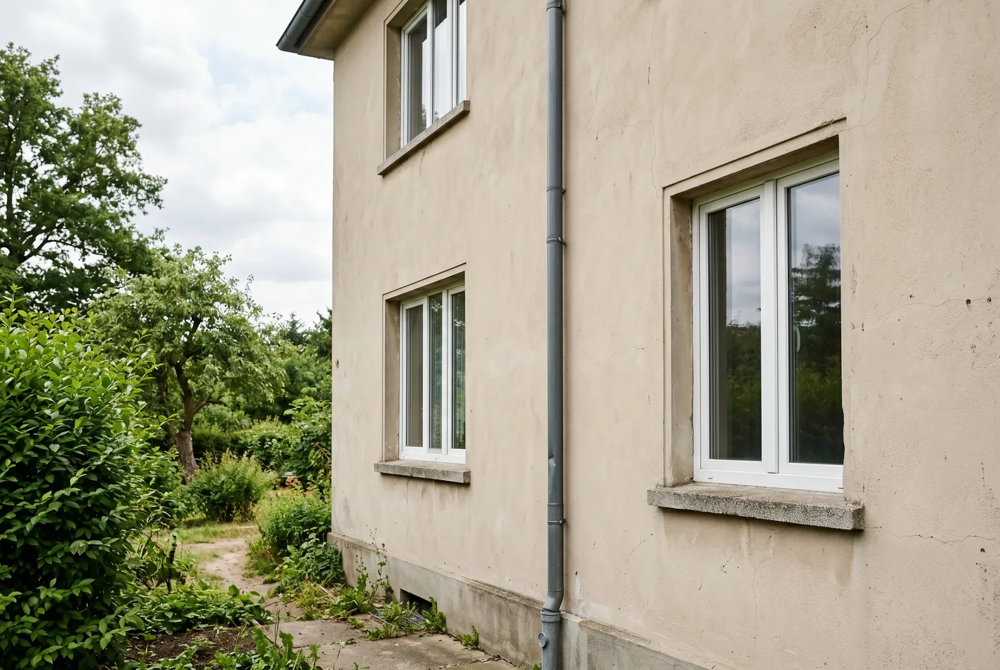
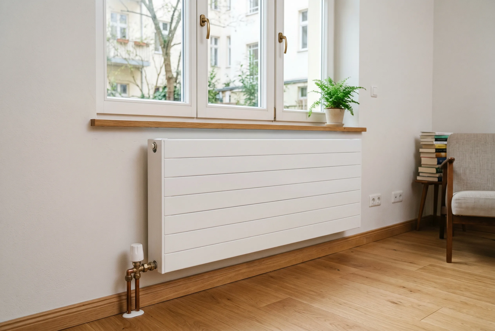
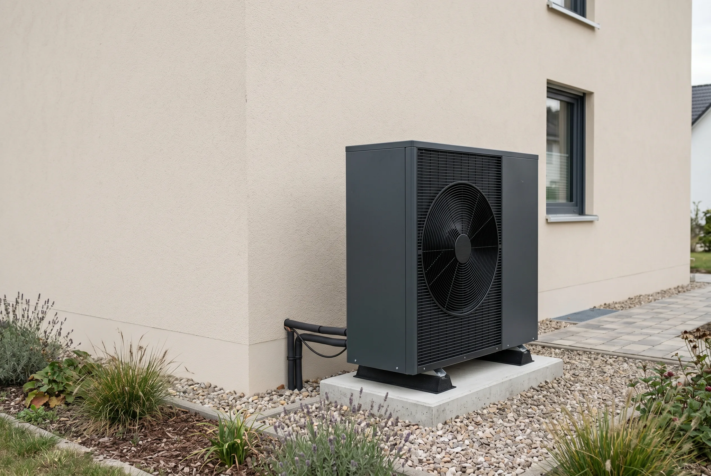

Inhaltsverzeichnis
- Warum diese Frage wichtiger ist als Sie denken
- Was Sie für den Check brauchen
- Selbstcheck Variante A: Luft-Wasser-Wärmepumpe
- Check 1 — Baujahr und Gebäudetyp
- Check 2 — Dämmzustand und Gebäudehülle
- Check 3 — Bestandsheizung und Vorlauftemperatur
- Check 4 — Heizkörper und Verteilsystem
- Selbstcheck Variante B: Luft-Luft-Wärmepumpe
- Variante A oder B? Die Empfehlungslogik
- Ihr Ergebnis — Was bedeutet es?
- Fazit — und wie EffiNova den nächsten Schritt abnimmt
- Häufige Fragen
Das Wichtigste in Kürze
- Nicht das Baujahr zählt: Das Fraunhofer ISE vermaß 77 Wärmepumpen in Bestandsgebäuden (Baujahr 1826 bis 2001) und fand keine Korrelation zwischen Baujahr und Effizienz.
- Vier prüfbare Faktoren: Über die Eignung entscheiden Baujahr, Dämmzustand, Vorlauftemperatur und Heizkörper, nicht das Alter im Grundbuch.
- Vorlauftemperatur ist der wichtigste Wert: Wird Ihr Haus beim 50-Grad-Test (Vorlauf auf 50 bis 55 Grad begrenzt) warm, ist es gut geeignet; je 10 Grad weniger heben die Jahresarbeitszahl um rund 0,5 Punkte.
- Keine Fußbodenheizung nötig: Auch große Plattenheizkörper genügen; bleiben einzelne Räume kühl, reicht meist der Tausch weniger Heizkörper.
- Zwei Wege, beide förderfähig: Dieser Artikel prüft die Luft-Wasser-Wärmepumpe (Variante A) und die Luft-Luft-Wärmepumpe (Variante B) – gefördert werden beide über KfW 458 zu gleichen Sätzen.
- Ampel-Ergebnis: Grün heißt sofort startklar, Gelb braucht kleine Maßnahmen (gedämmte Kellerdecke, hydraulischer Abgleich), Rot bedeutet erst sanieren, nicht das Aus.
Stand der Angaben (12. Juli 2026): Bundestag und Bundesrat haben am 10. Juli 2026 das neue Gebäudemodernisierungsgesetz (GModG) beschlossen, und die reformierten KfW-Förderbedingungen gelten laut BMWE und KfW für neue Anträge ab dem 21. Juli 2026. Das Gesetz ist jedoch noch nicht verkündet und die geänderte Förderrichtlinie noch nicht im Bundesanzeiger veröffentlicht – alle Zahlen geben den aktuellen Stand des Wissens wieder, ohne Gewähr. Die Förderung steht außerdem unter dem Vorbehalt verfügbarer Bundesmittel; ein Rechtsanspruch besteht nicht. Welche Konditionen für Ihr Vorhaben konkret gelten, prüfen wir gern tagesaktuell für Sie.
Warum diese Frage wichtiger ist als Sie denken
Die Sorge ist verbreitet: Wer ein älteres Haus besitzt, geht oft davon aus, dass eine Wärmepumpe im Altbau nicht funktioniert. Diese Annahme hält sich hartnäckig, kostet aber bares Geld, weil viele Eigentümer aus reiner Unsicherheit weiter mit Öl oder Gas heizen. Tatsächlich entscheidet nicht das Alter Ihres Hauses über die Eignung, sondern vier nüchterne, prüfbare Faktoren.
Das Fraunhofer ISE hat 77 Wärmepumpen in Bestandsgebäuden über Jahre vermessen, darunter Häuser mit Baujahren von 1826 bis 2001. Das zentrale Ergebnis: Eine Korrelation zwischen Baujahr und Effizienz ließ sich nicht feststellen. Luft-Wasser-Geräte erreichten im Schnitt eine Jahresarbeitszahl von 3,4, einzelne Anlagen lagen sogar bei 4,9. Mit anderen Worten: Auch ein unsaniertes Gebäude kann eine wirtschaftlich arbeitende Wärmepumpe tragen, wenn die übrigen Voraussetzungen stimmen.
Genau hier setzt dieser Selbstcheck an. In vier kurzen Prüfschritten ordnen Sie Baujahr, Dämmzustand, Vorlauftemperatur und Heizkörper ein und erhalten am Ende eine Ampel-Einschätzung: grün, gelb oder rot. Wichtig ist die ehrliche Einordnung: Dieser Check liefert Ihnen eine fundierte Orientierung, ersetzt aber keine professionelle Heizlastberechnung nach DIN EN 12831. Er sagt Ihnen, ob sich der nächste Schritt lohnt und welcher das ist.
Gut zu wissen: Die häufigste Fehleinschätzung lautet "Mein Haus ist zu alt". In der Praxis zeigt sich oft das Gegenteil: Entscheidend ist, mit welcher Vorlauftemperatur Ihre Heizung das Haus warm hält, nicht das Baujahr im Grundbuch.
Was Sie für den Check brauchen
Bevor Sie loslegen, lohnt es sich, vier Informationen griffbereit zu haben. Sie müssen dafür nichts kaufen und keinen Fachbetrieb rufen. Alles, was Sie brauchen, finden Sie in vorhandenen Unterlagen oder durch einen kurzen Blick ins Haus. Mit diesen Angaben lässt sich jeder der folgenden vier Checks zügig durchgehen.
- Das Baujahr des Gebäudes. Sie finden es im Kaufvertrag, im Energieausweis oder in den Bauunterlagen. Eine grobe Jahreszahl genügt für die Einordnung.
- Die aktuelle Heizung und ihre Vorlauftemperatur. Das ist die Temperatur, auf die der Kessel das Heizwasser erwärmt. Sie lässt sich am Display oder am Regler der Heizung ablesen.
- Ein grober Überblick über den Dämmzustand. Wurden Dach, Kellerdecke oder Fenster in den letzten Jahrzehnten erneuert? Auch eine ungefähre Einschätzung hilft weiter.
- Optional: der letzte Heizkostenbescheid. Der Jahresverbrauch in Kilowattstunden verrät viel über den energetischen Zustand Ihres Hauses.
Haben Sie diese Punkte beisammen, dauert der eigentliche Check kaum länger als fünf Minuten. Wer den Heizkostenbescheid nicht zur Hand hat, kann ihn weglassen, die ersten drei Angaben tragen die Bewertung bereits zuverlässig.
Selbstcheck Variante A: Eignet sich Ihr Altbau für eine Luft-Wasser-Wärmepumpe?
Variante A prüft den klassischen Weg: Eine Luft-Wasser-Wärmepumpe erwärmt das Heizungswasser, das durch Ihre vorhandenen Heizkörper läuft, und liefert das Warmwasser gleich mit. Genau deshalb hängt hier alles am Wasserkreis – an Baujahr, Dämmzustand, Vorlauftemperatur und Heizkörpergröße. Die folgenden vier Checks gehen diese Faktoren der Reihe nach durch, den Praxistest mit auf 50 bis 55 Grad begrenztem Vorlauf eingeschlossen.
Ein fünfter Punkt lässt sich vorab in einer Minute klären: der Platz für die Außeneinheit. Sie braucht einen Aufstellort an der Fassade, im Garten oder auf dem Flachdach, mit etwas Abstand zum Nachbargrundstück und zu Schlafzimmerfenstern. Auf den meisten Einfamilienhaus-Grundstücken ist das kein Problem, nur in sehr dichter Bebauung lohnt ein genauer Blick.
Check 1 — Baujahr und Gebäudetyp
Auch wenn das Baujahr allein nicht entscheidet, liefert es einen brauchbaren ersten Anhaltspunkt. Es verrät, nach welchem energetischen Standard ein Haus ursprünglich errichtet wurde und wie hoch der Heizenergiebedarf typischerweise ausfällt. Als grober Filter teilen wir Gebäude in drei Baualtersklassen ein. Ordnen Sie Ihr Haus einfach der passenden Zeile zu.
| Baujahr | Typischer Heizenergiebedarf | Ausgangslage |
|---|---|---|
| vor 1977 | hoch (oft über 150 kWh/m²·a) | erhöhter Prüf- und ggf. Sanierungsbedarf |
| 1977 bis 1994 | mittel | Prüfung empfohlen, oft mit kleinen Maßnahmen gut machbar |
| ab 1995 | niedriger | gute Ausgangslage |
Der Stichtag 1977 ist kein Zufall: In diesem Jahr trat die erste Wärmeschutzverordnung in Kraft, ab der Neubauten überhaupt erstmals verbindliche Dämmanforderungen erfüllen mussten. Häuser davor wurden meist ohne nennenswerte Wärmedämmung gebaut. Ab 1995 gelten dann deutlich strengere Vorgaben, was sich im niedrigeren Verbrauch niederschlägt.
Wichtig bleibt: Selbst ein Haus aus der Vorkriegszeit ist nicht automatisch ein Fall fürs Aus. Viele dieser Gebäude wurden über die Jahrzehnte in Etappen modernisiert, neue Fenster hier, ein gedämmtes Dach dort. Notieren Sie sich Ihre Ampelfarbe aus dieser Tabelle als Zwischenstand und gehen Sie weiter zu Check 2, der oft das Bild korrigiert.

Check 2 — Dämmzustand und Gebäudehülle
Der Dämmzustand korrigiert das Bild aus Check 1 in beide Richtungen. Ein altes Haus mit erneuertem Dach und neuen Fenstern verhält sich energetisch ganz anders als ein unangetasteter Originalbau. Drei Stellen sind dabei besonders wichtig, weil über sie die meiste Wärme verloren geht: das Dach, die Kellerdecke und die Fenster.
Die drei entscheidenden Stellen prüfen
Sie brauchen keine Thermografie, um sich ein Bild zu machen. Eine einfache Selbsteinschätzung reicht für die Orientierung: Wann wurden diese Bereiche zuletzt erneuert? Je jünger die Maßnahme, desto besser die Ausgangslage.
- Dach beziehungsweise oberste Geschossdecke: Ist das Dach gedämmt oder der Dachboden zumindest mit Dämmplatten belegt? Ein ungedämmtes Dach ist einer der größten Wärmeverluste.
- Kellerdecke: Spüren Sie kalte Füße im Erdgeschoss? Eine ungedämmte Kellerdecke zieht spürbar Wärme nach unten ab.
- Fenster: Sind noch einfach verglaste oder sehr alte Fenster verbaut, oder wurde auf moderne Zwei- oder Dreifachverglasung umgestellt?
Der ermutigende Teil: Nicht jede Lücke verlangt eine teure Komplettsanierung. Gerade die Dämmung der Kellerdecke und der obersten Geschossdecke gehört zu den günstigsten und wirkungsvollsten Maßnahmen überhaupt. Häufig lassen sich beide zusammen für rund 3.000 bis 6.500 Euro umsetzen, oft sogar in Eigenleistung. Genau diese kleinen Eingriffe können ein Haus, das im Check zunächst auf Gelb stand, in den grünen Bereich heben.
Gut zu wissen: Ob sich zuerst die Dämmung oder direkt der Heizungstausch lohnt, hängt vom Einzelfall ab. Unser Tipp: Lesen Sie dazu, in welcher Reihenfolge Dämmen und Wärmepumpe sinnvoll sind, bevor Sie investieren.
Eignungs- und Förder-Check in einem – wir prüfen Haus UND Fördervoraussetzungen.
EffiNova prüft verbindlich, ob Luft-Wasser oder Luft-Luft zu Ihrem Altbau passt – und gleich mit, ob Gerät und Vorhaben die aktuellen Fördervoraussetzungen erfüllen.
Kostenlose ErsteinschätzungCheck 3 — Bestandsheizung und Vorlauftemperatur
Jetzt kommt der wichtigste Wert des gesamten Checks. Die Vorlauftemperatur ist die Temperatur, auf die Ihre Heizung das Wasser erwärmt, bevor es durch die Heizkörper läuft. Sie ist der zuverlässigste Indikator dafür, ob eine Wärmepumpe in Ihrem Haus effizient arbeiten wird, weil sie direkt die Effizienz bestimmt.
Warum die Vorlauftemperatur über die Effizienz entscheidet
Je niedriger die Vorlauftemperatur, desto weniger Strom braucht eine Wärmepumpe für dieselbe Wärmemenge. Als Faustregel steigt die Jahresarbeitszahl um etwa 0,5 Punkte, wenn die Vorlauftemperatur um 10 Grad sinkt. Das ist der Grund, warum dieser eine Wert wichtiger ist als das Baujahr: Hält Ihre Heizung das Haus schon mit moderater Temperatur warm, ist die halbe Miete gezahlt.
Der Praxistest: der 50-Grad-Test
Sie können das selbst herausfinden, ohne Fachwissen und ohne Kosten. Begrenzen Sie die Vorlauftemperatur Ihrer bestehenden Heizung an der Regelung auf 50 bis 55 Grad. Drehen Sie dann alle Thermostate auf und beobachten Sie das Haus an einem kalten Tag über 24 bis 72 Stunden. Werden alle Räume angenehm warm, ist Ihr Haus bestens für eine Wärmepumpe geeignet, denn genau in diesem Temperaturbereich arbeitet sie am wirtschaftlichsten.
| Benötigte Vorlauftemperatur | Bewertung |
|---|---|
| bis 55 °C | gut geeignet |
| 55 bis 70 °C | möglich, mit Optimierung empfehlenswert |
| über 70 °C | kritisch, zunächst Maßnahmen nötig |
Bleiben einzelne Räume kühl, ist das kein Ausschlusskriterium, sondern ein Hinweis. Oft genügt es, in diesen Zimmern die Heizkörper zu vergrößern, womit wir bei Check 4 sind.

Check 4 — Heizkörper und Verteilsystem
Ein hartnäckiger Mythos besagt, eine Wärmepumpe brauche zwingend eine Fußbodenheizung. Das stimmt nicht. Entscheidend ist allein, dass die Wärme bei niedriger Vorlauftemperatur ausreichend an den Raum abgegeben wird. Dafür braucht es genügend Heizfläche, und die lässt sich auch mit Heizkörpern erreichen.
Radiatoren oder Flächenheizung?
Flächenheizungen wie Fußboden- oder Wandheizungen sind ideal, weil sie große Flächen bei niedriger Temperatur nutzen. Aber auch klassische Heizkörper funktionieren. Große, moderne Plattenheizkörper geben deutlich mehr Wärme ab als schmale alte Rippenheizkörper gleicher Baulänge. Prüfen Sie also weniger, ob Heizkörper vorhanden sind, sondern wie groß sie im Verhältnis zum Raum ausfallen.
Wann die bestehenden Heizkörper reichen
Wurden beim 50-Grad-Test in Check 3 alle Räume warm, sind Ihre Heizkörper bereits ausreichend dimensioniert, dann ist hier nichts zu tun. Blieben einzelne Zimmer kühl, reicht oft schon der Austausch dieser wenigen Heizkörper gegen Niedertemperatur- oder Tieftemperaturmodelle. Das ist deutlich günstiger und weniger aufwendig, als das ganze Haus aufzustemmen.
Ein häufig unterschätzter Hebel ist der hydraulische Abgleich. Dabei wird der Wasserdurchfluss durch jeden Heizkörper so eingestellt, dass die Wärme gleichmäßig im Haus verteilt wird. Für rund 500 bis 1.500 Euro kann er die Effizienz spürbar verbessern — je nachdem, wie gut das System vorher abgeglichen war — und ist für eine geförderte Wärmepumpe ohnehin Pflicht.
Gut zu wissen: Welcher Wärmepumpentyp zu Ihrem Heizsystem passt, ist eine eigene Entscheidung. Unser Tipp: Vergleichen Sie dazu Luft-Luft- und Luft-Wasser-Wärmepumpen im Altbau, bevor Sie sich festlegen.
Selbstcheck Variante B: Eignet sich Ihr Altbau für eine Luft-Luft-Wärmepumpe?
Variante B prüft den zweiten Weg, und der funktioniert grundlegend anders. Eine Luft-Luft-Wärmepumpe (reversible Split- oder Multisplit-Anlage) erzeugt die Wärme direkt im Raum über Innengeräte. Es gibt keinen Wasserkreis und damit auch keine Vorlauftemperatur-Hürde: Der 50-Grad-Test, die Heizkörpergröße und die 55-Grad-Frage aus Variante A spielen hier schlicht keine Rolle. Ihre alten Heizkörper bleiben ungenutzt, stören aber nicht. Als Zusatznutzen kühlen dieselben Geräte im Sommer.
Dafür entscheidet eine eigene Checkliste über die Eignung. Gehen Sie diese Punkte durch:
- Raumaufteilung und Anzahl der Räume: Als Richtwert braucht jeder Hauptraum ein eigenes Innengerät (grob 3.000 Euro je Raum, Orientierung fürs Einfamilienhaus). Offene Grundrisse sind ideal, weil ein Gerät mehrere Bereiche mitversorgt; sehr verwinkelte Grundrisse mit vielen kleinen Zimmern treiben die Zahl der Innengeräte und damit die Kosten.
- Platz für die Innengeräte: Jedes Gerät braucht eine freie Wandfläche, meist oben unter der Decke. Die Geräte bleiben sichtbar – wer das nicht möchte, sollte es vorher wissen.
- Platz für die Außeneinheit: Wie bei Variante A braucht die Außeneinheit einen Aufstellort mit etwas Abstand zum Nachbargrundstück und zu Schlafzimmerfenstern.
- Elektrik und Zuleitung: Innen- und Außengeräte brauchen eine ausreichend dimensionierte Stromzuleitung und Absicherung. Ob Ihr Zählerschrank und die Leitungswege passen, klärt der Fachbetrieb bei der Besichtigung.
- Warmwasser-Lösung nötig: Eine Luft-Luft-Wärmepumpe liefert kein warmes Wasser. Planen Sie eine separate Lösung ein, zum Beispiel eine Brauchwasser-Wärmepumpe für rund 2.500 bis 5.000 Euro (Orientierung fürs Einfamilienhaus).
- Gerät muss auf der BAFA-Liste stehen: Das ist die zentrale Fördervoraussetzung. Viele reine Klima-Splitgeräte sind nicht gelistet – prüfen Sie das konkrete Modell, bevor Sie unterschreiben.
- Lärm-Anforderung: Seit Januar 2026 müssen die Geräuschemissionen des Außengeräts mindestens 10 Dezibel unter dem gesetzlichen Grenzwert liegen, damit die Förderung fließt.
Können Sie alle Punkte mit Ja beantworten, ist Ihr Altbau für eine Luft-Luft-Wärmepumpe geeignet – unabhängig davon, wie Ihr Haus in den Checks 1 bis 4 abgeschnitten hat.
Variante A oder B? Die Empfehlungslogik
Die Verbindung beider Checks ist einfach: Scheitert Ihr Haus in Variante A an einer dauerhaft hohen Vorlauftemperatur oder an den Gesamtkosten, ist die Luft-Luft-Wärmepumpe oft der wirtschaftlichere Weg. Zur Orientierung im Einfamilienhaus (2026, Werte streuen stark): Eine Multisplit-Anlage fürs ganze Haus kostet installiert etwa 10.000 bis 20.000 Euro, eine Luft-Wasser-Wärmepumpe etwa 27.000 bis 40.000 Euro. Bei der Förderung entsteht dabei kein Nachteil: Über KfW 458 werden beide Systeme zu identischen Sätzen gefördert – 30 Prozent Grundförderung plus Boni, gedeckelt bei 70 beziehungsweise 80 Prozent von maximal 28.000 Euro förderfähigen Kosten (für Förderanträge ab dem 21. Juli 2026). Die 80 Prozent gelten dabei nur bis zu einem zu versteuernden Haushaltsjahreseinkommen von 30.000 Euro (mit minderjährigem Kind bis 40.000 Euro); darüber liegt die Obergrenze bei 70 Prozent. Rechnen Sie bei Luft-Luft die separate Warmwasser-Lösung mit ein; ob und wie sie in die förderfähigen Kosten einfließt, ist eine Einzelfallfrage, die wir gern für Sie prüfen.
Ihr Ergebnis — Was bedeutet es?
Zählen Sie nun die Ampelfarben aus den vier Checks zusammen. Das Gesamtbild ergibt sich aus dem Zusammenspiel von Baujahr, Dämmung, Vorlauftemperatur und Heizkörpern, wobei die Vorlauftemperatur am schwersten wiegt. Ordnen Sie Ihr Haus einem der drei Szenarien zu und Sie wissen, welcher Schritt als Nächstes ansteht.
Grün — Ihr Haus ist sofort geeignet
Überwiegend grüne Werte bedeuten: Ihr Gebäude wird bei 55 Grad Vorlauftemperatur warm, die Hülle ist solide gedämmt und die Heizkörper passen. Sie können den Heizungstausch direkt angehen. Der sinnvolle nächste Schritt ist eine Heizlastberechnung durch einen Fachbetrieb, der die Wärmepumpe exakt auf Ihr Haus auslegt.
Gelb — geeignet mit kleinen Maßnahmen
Eine gemischte Bilanz ist der häufigste Fall und kein Grund zur Sorge. Meist heben ein oder zwei gezielte Maßnahmen das Haus ins Grüne: eine gedämmte Kellerdecke, einige größere Heizkörper oder ein hydraulischer Abgleich. Diese Eingriffe kosten überschaubar und sind oft förderfähig.
Rot — zuerst sanieren
Überwiegend rote Werte, vor allem eine dauerhaft nötige Vorlauftemperatur über 70 Grad, bedeuten nicht das Aus, sondern eine andere Reihenfolge. Hier sollten zunächst Dämmung und Heizflächen verbessert werden. Eine Heizlastberechnung zeigt, welche Schritte den größten Effekt haben. Oder Sie wechseln die Perspektive: Genau für diesen Fall lohnt der Blick auf Selbstcheck Variante B – die Luft-Luft-Wärmepumpe umgeht die Vorlauftemperatur-Hürde komplett.
Welche Wärmepumpen sind 2026 überhaupt förderfähig?
Zur Eignung Ihres Hauses kommt eine zweite Prüfung hinzu: die des Geräts. Denn nicht jede Wärmepumpe, die technisch passt, erfüllt auch die Fördervoraussetzungen. Nach den technischen Fördervoraussetzungen (Stand Januar 2026) sind Luft-Wasser-Wärmepumpen seit dem 1. Januar 2026 nur noch förderfähig, wenn die Geräuschemissionen des Außengeräts mindestens 10 Dezibel unter dem gesetzlichen Grenzwert liegen – zuvor genügten 5 Dezibel. Prüfen Sie also neben der Jahresarbeitszahl auch die Schallwerte im Datenblatt. Geräte mit natürlichem Kältemittel wie R290 bleiben technisch eine sinnvolle Wahl, der frühere Extra-Bonus dafür ist für Förderanträge ab dem 21. Juli 2026 jedoch entfallen. Kurz: Eignung und Fördervoraussetzungen gehören zusammen geprüft, bevor Sie sich auf ein Modell festlegen.
Unser Tipp: Eine vertiefte Einordnung über alle Faktoren hinweg finden Sie in unserem Hauptartikel dazu, ob sich eine Wärmepumpe im Altbau lohnt.

Fazit — und wie EffiNova den nächsten Schritt abnimmt
Wärmepumpe und Altbau passen deutlich häufiger zusammen, als der weit verbreitete Pessimismus glauben macht. Die Feldforschung des Fraunhofer ISE belegt es mit harten Zahlen: Auch in Bestandsgebäuden arbeiten die Geräte effizient, und das Baujahr ist nicht der entscheidende Faktor. Mit den vier Checks zu Baujahr, Dämmung, Vorlauftemperatur und Heizkörpern haben Sie nun eine ehrliche Standortbestimmung in der Hand.
Dieser Selbstcheck ersetzt keine fachliche Auslegung, aber er sagt Ihnen, ob sich der nächste Schritt lohnt. Genau dort setzen wir an: Die Eignung Ihres Gebäudes prüfen wir gern verbindlich für Sie und nehmen Ihnen die Heizlastberechnung, die Auswahl des passenden Geräts, die Förderung und die gesamte Antragsabwicklung ab, damit aus Ihrer Ampelfarbe ein konkreter, geförderter Plan wird.
Zur Vertiefung verweisen wir gern auf weitere Beiträge unseres Wärmepumpen-Wissenshubs. Unser Tipp: Wie Sie die Förderung für eine Wärmepumpe im Altbau Schritt für Schritt beantragen, lesen Sie in unserem Beitrag dazu. Und eine realistische Einschätzung von Kosten und Förderung im Altbau finden Sie in unserem Beitrag, der zeigt, was am Ende für Sie übrig bleibt.
Häufige Fragen
Ist eine Wärmepumpe im Altbau wirklich sinnvoll?
Ja, in vielen Fällen. Das Fraunhofer ISE hat in seiner Feldstudie 77 Wärmepumpen in Bestandsgebäuden untersucht, mit Baujahren von 1826 bis 2001. Luft-Wasser-Geräte erreichten im Schnitt eine Jahresarbeitszahl von 3,4, auch ohne Vollsanierung. Eine Korrelation zwischen Baujahr und Effizienz fand sich nicht. Entscheidend sind die Vorlauftemperatur, der Dämmzustand und die Heizkörpergröße, nicht das Alter des Hauses allein.
Welche Wärmepumpe ist die beste für einen Altbau?
Das hängt vom Haus ab – und es gibt zwei Wege. Die Luft-Wasser-Wärmepumpe nutzt die vorhandenen Heizkörper und liefert Warmwasser gleich mit, braucht dafür aber niedrige Vorlauftemperaturen und kostet im Einfamilienhaus 2026 installiert etwa 27.000 bis 40.000 Euro (Orientierungswerte). Die Luft-Luft-Wärmepumpe heizt die Räume direkt über Innengeräte, umgeht die Vorlauftemperatur-Hürde komplett und liegt für ein ganzes Einfamilienhaus meist bei etwa 10.000 bis 20.000 Euro – Warmwasser muss separat gelöst werden. Gerade im Altbau mit hohen Vorlauftemperaturen ist Luft-Luft deshalb oft die wirtschaftlichere Wahl; gefördert werden über KfW 458 beide Systeme zu gleichen Sätzen.
In welchen Häusern scheitert die Wärmepumpe?
Wirtschaftlich schwierig wird es, wenn die Vorlauftemperatur dauerhaft über 70 Grad liegen muss, die Gebäudehülle extrem schlecht gedämmt ist und keine wirtschaftliche Sanierung möglich ist. In solchen Fällen empfiehlt sich zunächst eine Heizlastberechnung. Häufig lässt sich die Eignung aber durch kleine Maßnahmen wie eine gedämmte Kellerdecke oder größere Heizkörper deutlich verbessern. Wichtig: Diese Hürde betrifft wassergeführte Systeme wie die Luft-Wasser-Wärmepumpe. Eine Luft-Luft-Wärmepumpe erzeugt die Wärme direkt im Raum und ist von der Vorlauftemperatur unabhängig – sie bleibt auch dann eine Option, wenn der wassergeführte Weg scheitert.
Kann ich eine Wärmepumpe mit normalen Heizkörpern betreiben?
Ja. Eine Fußbodenheizung ist keine Voraussetzung. Entscheidend ist, dass die vorhandenen Heizkörper bei niedriger Vorlauftemperatur genug Wärme abgeben. Großflächige Plattenheizkörper sind dafür oft besser geeignet als schmale Rippenheizkörper. Wo einzelne Räume nicht warm werden, reicht meist der Austausch weniger Heizkörper gegen Niedertemperatur-Modelle aus.
Was besagt die 20-Grad-Regel für Wärmepumpen?
Die 20-Grad-Regel ist eine grobe Faustregel zum Heizverhalten: Je größer der Temperaturunterschied, den die Wärmepumpe überwinden muss, desto mehr Strom verbraucht sie. Halten Sie die Raumtemperatur deshalb möglichst konstant bei rund 20 Grad, statt sie stark hoch- und herunterzuregeln. Wärmepumpen arbeiten am sparsamsten, wenn sie kontinuierlich auf gleichmäßigem Niveau heizen statt in starken Lastspitzen.
Was bedeutet JAZ und warum ist der Wert 3,0 wichtig?
JAZ steht für Jahresarbeitszahl. Sie gibt an, wie viel Wärme eine Wärmepumpe aus einer Kilowattstunde Strom erzeugt: Bei einer JAZ von 3,0 werden aus 1 kWh Strom 3 kWh Wärme. Nach den Vorgaben zur BEG-Förderung muss die rechnerische JAZ mindestens 3,0 betragen, damit die staatliche Förderung gewährt wird. Eine niedrige Vorlauftemperatur ist der wichtigste Hebel für eine gute JAZ.
Welche Wärmepumpen sind 2026 förderfähig?
Förderfähig über die KfW-Heizungsförderung (Programm 458) sind sowohl wassergeführte Systeme – im Altbau meist Luft-Wasser- oder Sole-Wasser-Geräte mit einer rechnerischen Jahresarbeitszahl von mindestens 3,0 – als auch Luft-Luft-Wärmepumpen (reversible Split- und Multisplit-Geräte), sofern das Gerät in der BAFA-Liste förderfähiger Wärmepumpen steht, als Heizung dient und die Effizienz-Mindestwerte erfüllt. Für beide gilt seit Januar 2026: Die Geräuschemissionen des Außengeräts müssen mindestens 10 Dezibel unter dem gesetzlichen Grenzwert liegen. Reine Kühl-Klimageräte ohne Heizfunktion und Listung sind nicht förderfähig. Der frühere Extra-Bonus für natürliche Kältemittel wie R290 ist für Förderanträge ab dem 21. Juli 2026 entfallen. Wie Sie die Förderung Schritt für Schritt beantragen, zeigt unser Beitrag zur Wärmepumpen-Förderung im Altbau.
Eignet sich mein Altbau eher für Luft-Luft oder Luft-Wasser?
Machen Sie beide Selbstchecks: Wird Ihr Haus beim 50-Grad-Test warm und sind die Heizkörper groß genug, spricht das für die Luft-Wasser-Wärmepumpe (Variante A). Scheitert Ihr Haus an hoher Vorlauftemperatur oder an den Kosten, ist die Luft-Luft-Wärmepumpe (Variante B) oft der wirtschaftlichere Weg: Sie heizt die Räume direkt, alte Heizkörper spielen keine Rolle, und sie kostet im Einfamilienhaus meist etwa 10.000 bis 20.000 Euro statt 27.000 bis 40.000 Euro (Orientierungswerte 2026). Warmwasser muss bei Luft-Luft separat gelöst werden, etwa über eine Brauchwasser-Wärmepumpe. Die KfW-458-Förderung ist für beide Systeme gleich – 30 Prozent Grundförderung plus Boni, gedeckelt bei 70 beziehungsweise 80 Prozent je nach zu versteuerndem Haushaltsjahreseinkommen (80 Prozent bis 30.000 Euro, mit minderjährigem Kind bis 40.000 Euro).